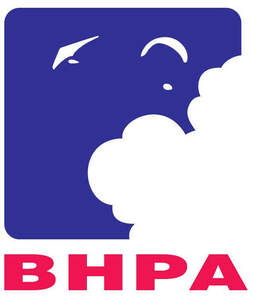
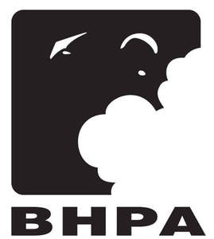

Trade Mark Journal No.2025/014 4 April 2025
UK00004177536 21 March 2025 (16,25,26,36,41)
Mark 1

Mark 2

- Class 16
- Printed matter; printed publications; books, picture books, handbooks, manuals and guides; log books, flight log books, journals; book jackets and covers; book marks; binders; magazines and periodicals; cards; greetings cards; posters; photographs.
- Class 25
- Clothing, footwear, headwear; caps.
- Class 26
- Badges; studs for clothing.
- Class 36
- Banking and insurance services; credit and debit card services; bank, cash and cheque card services; cheque verification services; insurance brokerage services; travel insurance; travellers' cheque, foreign currency and travel voucher services; cash disbursement services.
- Class 41
- Education, training, tuition and instruction services; sporting and recreation services; sports coaching services; educational examination services; formulation of training courses and syllabuses; organisation and conduction of sporting and recreational events and competitions; arranging and conducting conferences, seminars, courses, lectures and training workshops; providing sports facilities; rental of sports equipment; club services; administration and certification services; consultancy, information, and advisory services relating to the aforesaid services.
British Hang Gliding and Paragliding Association Limited
Representative: Dehns